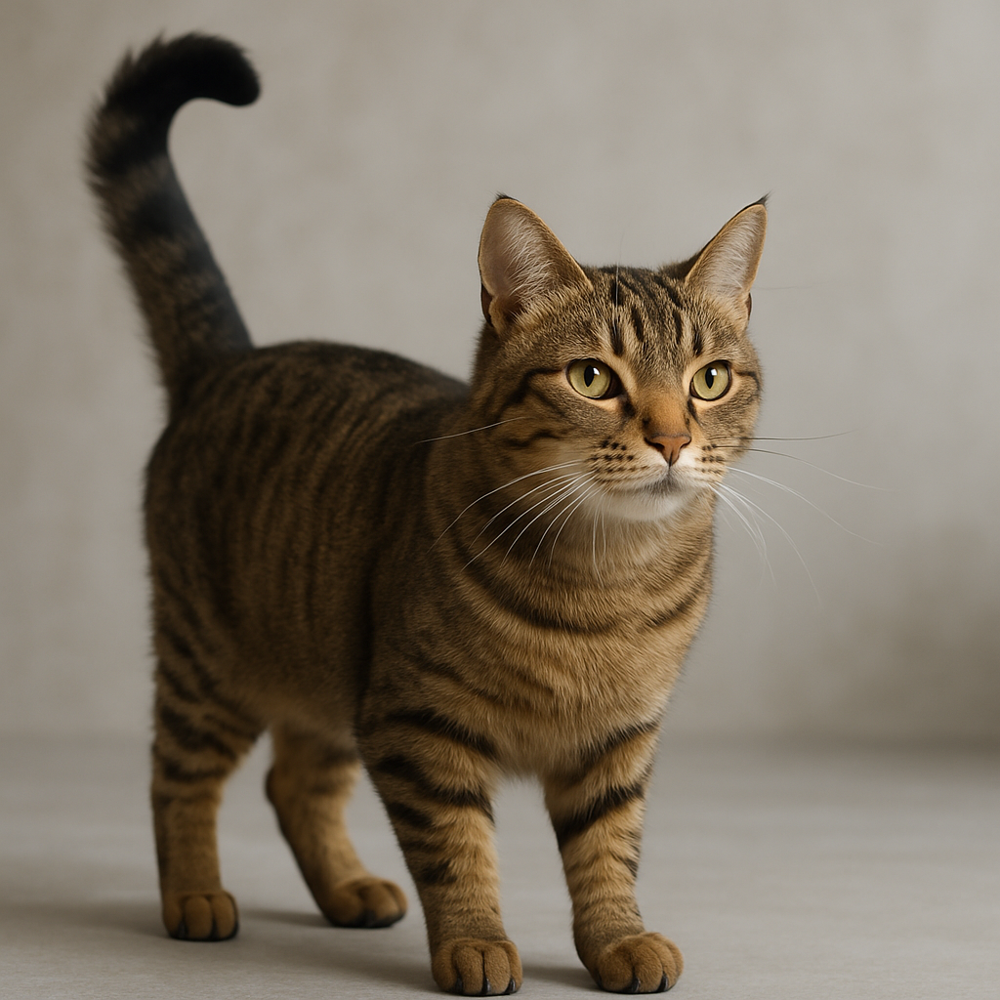
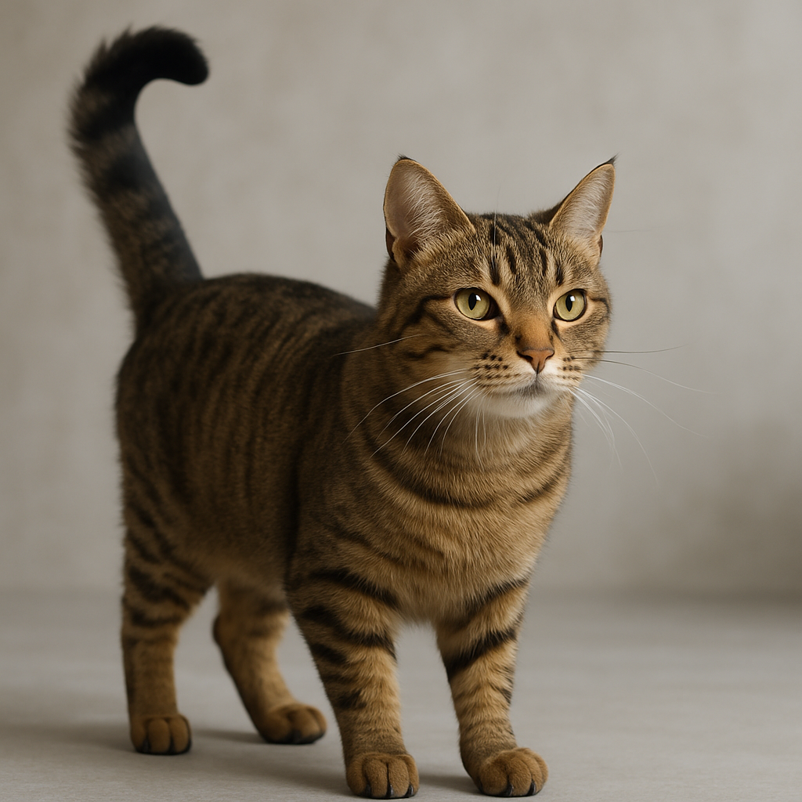

Step 1: Observe the Cat's Body Language
Observe the cat's body language. Cats express themselves via their ears, tail, whiskers, etc.
The first cat is displaying 'scared' body language; ears are back, tail is curled around its body, whiskers are back, fur slightly raised.
The second cat is displaying 'curious' or 'friendly' body language; tail is up, ears are forward, whiskers are forward, fur is down.
This is how you will know it is safe to pet the cat.
 

Step 2: Reach Out a Hand
It is now safe to reach out a hand to begin the petting process.
Keep your palm facing down and slowly move your hand toward the underside of the cat's chin. Avoid any sudden movements.

Step 3: Begin Petting the Cat
At this stage, you should continue very slowly moving your hand under the cat's chin until the cat initiates further petting.
Do not pet the rest of the cat's body just yet.

Step 4: Cat Initiates Further Petting
At this point the willing cat will initiate further petting.
Watch for the cat nudging its nose toward your hand or lowering its head for a forehead pet.
If the cat does not initiate the petting, do not proceed! This could result in injury

Step 5: Pet the Cat More Freely
Now you can pet the cat in other areas of its body.
Keep an eye on its body language to determine the best places to pet.
Many cats enjoy being pet on top of the head, between the shoulders, and along the back